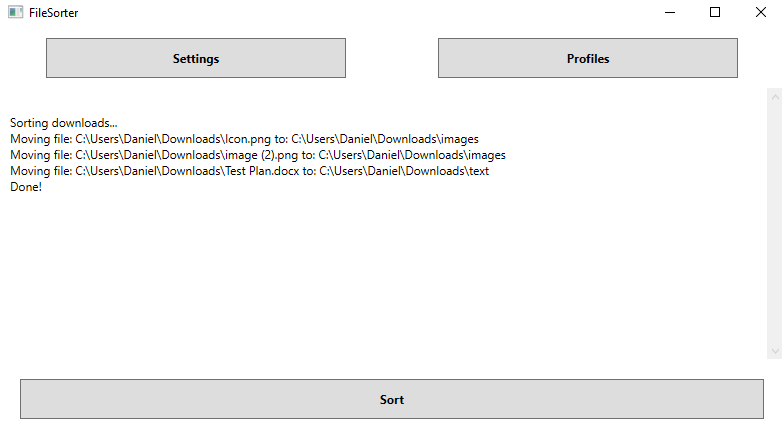

About the project
The File Sorter app sorts files based on their file type, users can set up rules within the app to specify where each file type gets sorted to.

In the "Profiles" section of the app the user can set up different rules. Each rule contains:
• Target folder: The name of the folder that files get sorted to.
• Extensions: A list of the file types that get sorted to the target folder.
The rulesets that the user creates can be saved in the app, they can also be exported and imported in the JSON format so that they can be easily stored or moved to other devices.

Starting the sort process will move all files in the specified folder according to the ruleset made by the user, files that do not get sorted anywhere get placed in a seperate miscellaneous folder.